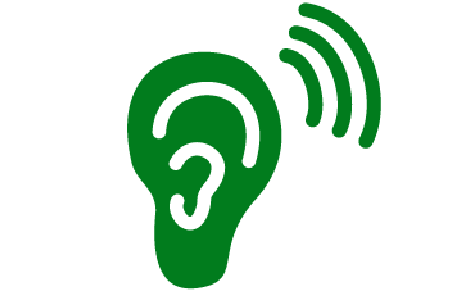
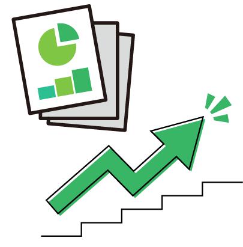
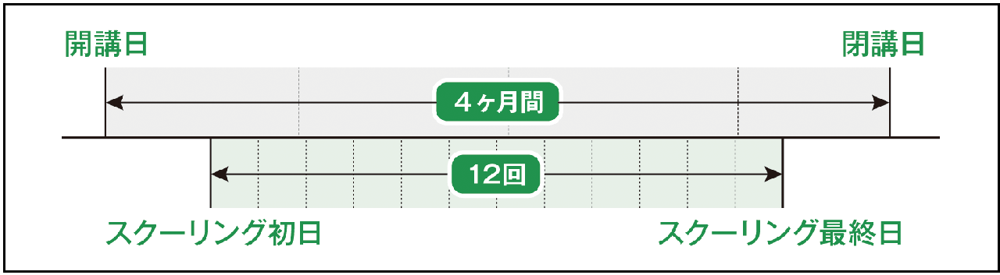
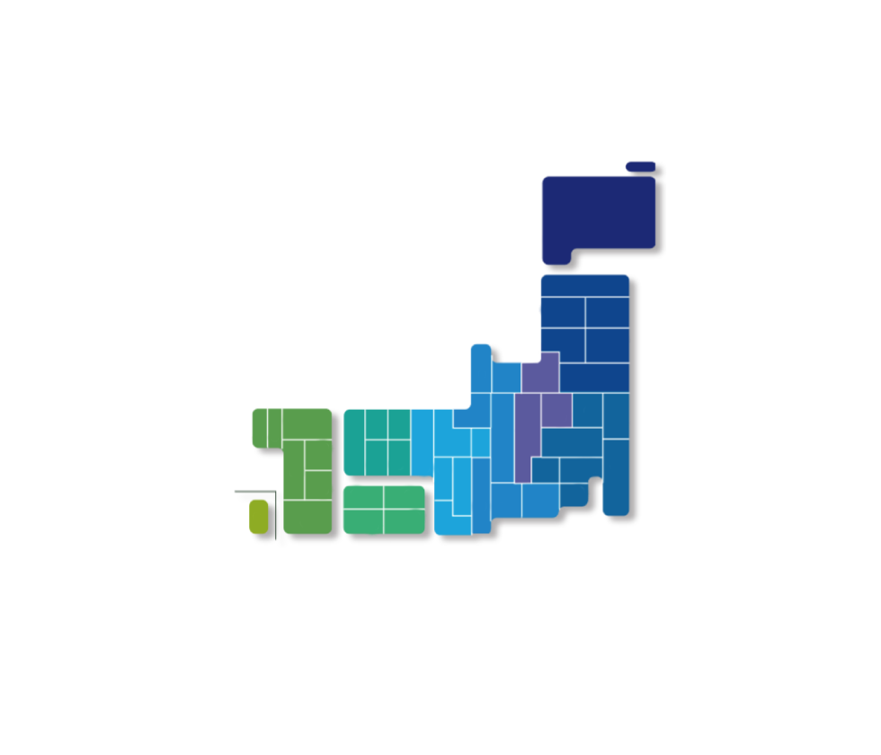

FEATURES日本産業カウンセラー協会（JAICO）キャリアコンサルタント養成講習 3大特長
- 受講者6名に1人の講師がついて、丁寧に指導。演習の満足度は99.6％（2025年11月修了者）
- 講師全員がトリプルライセンス（国家資格より上位のCC技能士、産業カウンセラー、キャリアコンサルタント）
- 「聴く力」が身について、試験にも実践にも活きるキャリアコンサルティングが学べる
あなたはどちらのタイプ？
- 教育訓練給付金を利用して受講したい
- 短期に集中して学習・受講したい
そんなあなたは…
専門実践教育給付金指定講座 2026年8月開講・4カ月コース （開講期間 8/1～11/30）（通学/オンライン 全国各地で開催） 会場・お申し込みはこちら▶
- 資格取得したいが…「リタイア後のブランクが長期」「公務員なので」給付金は受けられない
- 学生です。学割があればそれを利用して資格を就活に活かしたい
- じっくり受講・学習して国家試験にチャレンジしたい
そんなあなたは…
2026年6月開講・6カ月コース（給付金対象外） （開講期間 6/1～11/30）
（オンライン・1教室） 申込終了、詳細はこちら▶
NEWS新着情報 一覧をみる ↗
- 2026-05-25
- 2026年6月開講・6か月コースの受付を終了しました。
次回6か月コースの詳細は決まり次第ご案内いたします。 - 2026-04-22
- 2026年8月開講・4ヵ月コースの受付を開始しました。
- 2026-04-01
- 2026年6月開講・6ヵ月コースの受付を開始しました。
（６カ月コースは随時ご案内）
SETSUMEIKAI説明会 開催情報
- 全国でキャリアコンサルタント養成講習の「説明会」を開催しています。
※説明会情報は順次更新されます。ご不明な点は各エリアで説明会を主催する支部までお問合せください。 - 会場ごとのお申し込みとなりますので、ご希望の会場を選択してください。
- 通学（またはオンライン）を希望される会場の説明会へ参加されるとお申し込みがスムーズです。
- 説明会に参加された方は、受講料から￥22,000（税込）の割引があります。
《 詳しくはこちら 》 をご確認ください（他割引との併用は出来ません）。
- 北海道エリア対面
- 東北エリア対面・オンライン
- 上信越エリア（新潟・長野・群馬）対面・オンライン
- 北関東エリア（埼玉県・栃木県）対面・オンライン
- 東関東エリア（千葉県・茨城県）対面・オンライン
- 東京エリア（東京都・山梨県）対面・オンライン
- 神奈川エリア対面・オンライン
- 中部エリア対面・オンライン
- 関西エリアオンライン
- 中国エリア対面・オンライン
- 四国エリア対面・オンライン
- 九州エリア対面・オンライン
- 沖縄エリア対面
MOVIE“働く”を支えるプロへ
FEATURESJAICOの講習の特長
充実の実技指導
実習では、受講者６人に講師が1人付く指導で、講師が受講者に関わる時間が長く、受けられる指導の充実度が違います。受講者一人ひとりにあわせた丁寧な指導と適切なアドバイスで、国家資格合格レベルへと導きます。修了した方の演習指導の満足度は99.4％(※1)に達しています。
当協会の講師は全員が国家資格キャリアコンサルタントはもちろん、産業カウンセラー資格とキャリアコンサルティング技能士2級以上の資格を持っており、豊富な経験と実力で、資格取得後も現場で生きる指導を行います。
※2025年3月修了者アンケート結果
キャリコンのベースになる「傾聴」をしっかり身につけられる
カウンセリングの基本は「傾聴」です。「傾聴」とは、相手を理解しようと深く相手の話を「聴く」ことです。「傾聴」を基本としたカウンセリングで働く人を支えてきた当協会の講習だからこそ、キャリアコンサルタントに求められる「問題解決へ導くための傾聴力」を身に付けられます。

受講しやすさ e-learningで知識を定着、全日程オンラインコースもご用意
通学は主に実習を行う12日間、理論部分は在宅学習とe-learningにより学ぶことで通学日数の軽減と、繰り返し学習し、知識が定着しやすい環境を整えています。
また、教室が遠方にある方などでも受講できるよう、通学12日間をすべてオンラインで受講できるコースもご用意しています。
キャリコンで直面する「メンタルヘルス対応」にも強い
就職・転職・退職、育児・治療・介護と仕事の両立、職場の人間関係など働く人を取り巻くストレス要因は様々ある中、キャリアコンサルタントは、メンタルヘルスに関する知識を持ち、必要に応じて専門家につなげるなどの対応力が求められています。働く人のメンタルヘルス対策に長く携わってきた当協会だからこそ、働く人へのメンタルヘルス対応の要否や職場のメンタルヘルス維持・増進などの知識や視点も十分に学ぶことができます。
歴史と信頼
1960年の創立以来60年以上、「働く人と組織を支える」ための活動を続けており、産業カウンセラーを70,000人、国家資格キャリアコンサルタントは、2024年までに13,000人以上の有資格者(※)を輩出と、カウンセラー養成に長い歴史と実績があります。
(※2003年～2015年の標準レベルキャリアコンサルタントからの国家資格移行者を含む)
修了後のサポート
- キャリ模試®（キャリアコンサルタント全国統一模擬試験）
業界初の全国統一模擬試験です。本試験の約1ヶ月前に試験を模擬的に体験できます。後日届くフィードバックレポートのご自身の強み・弱みなどの分析結果が本番までのラストスパートに役立ちます。
▶ 詳しくみる｜2026年度試験日程 - 試験対策講座
国家試験にむけての学科試験・実技試験(論述・面接)対策講座を全国で開催しています。
▶ 詳しくみる - 更新講習
国家資格キャリアコンサルタントの登録を継続するため、知識・スキル向上を図るための様々な講習をご用意しております。
▶ 詳しくみる - CC倶楽部
日本産業カウンセラー協会（JAICO）が主催する、キャリアコンサルタント有資格者またはキャリアコンサルタントに興味のある方々の交流の場です。登録・年会費は無料です。
キャリアコンサルタント情報交換や研鑽・交流の場としてご活用ください。
▶ 開催実績はこちら▶ JAICO Facebook

OUTLINE養成講習について
講習の受講方法
キャリアコンサルタント養成講習は、スクーリング（通学またはオンライン）と通信教育で学びます。
(スクーリング)12日間：84時間スクーリングでは、講義と実習での学習となります。実習では、講師のもと小グループに分かれて、キャリアコンサルタント役と相談者役を繰り返し体験することで”知っている”から”できる”を目指します。また他者の体験を生で観察し共有することでさらに学びが深まります。
在宅学習（通信）69時間理論学習は、在宅学習でテキストと講義動画の視聴、確認問題に取り組みます。受講期間中、e-learning講義は繰り返し視聴でき、確認問題は繰り返しチャレンジすることができます。e-learning講義の講師は、現場で活躍中のキャリアコンサルタント、キャリア理論の分野の大学教授、研究者、法務の専門家等が担当しています。
講習概要
| 国家資格キャリア コンサルタント試験 の受験について | 厚生労働大臣が認定する講習の過程を修了することにより、国家資格キャリアコンサルタント試験の受験資格を得ることができます。 当協会のキャリアコンサルタント養成講習は、厚生労働大臣が認定するキャリアコンサルタント講習です。 |
|---|---|
| 修了条件 | スクーリング： 講義および実習84時間中70時間以上出席すること 習得度確認試験で6割以上の基準をクリアすること ※12日目は習得度確認試験を行いますので必ず出席してください。 通信（在宅学習）： 確認問題各回でそれぞれ6割以上正答すること |
| 受講期間 | 4月開講（2026年4月20日～2026年8月19日） 6月開講（2026年6月1日～11月30日・全日程オンライン1教室 給付金対象外） 8月開講（2026年8月1日～2026年11月30日） 12月開講（2026年12月1日～2027年3月31日） |
| 受講料 | 330,000円（税込み）・教材費込 ※一定の条件を満たす方は受講料の割引制度が適用されます。 以下から条件をご確認のうえ、お申込み先の支部へお問合せください。 ※受講料の割引制度について ※専門実践教育訓練給付制度について |
| 受講料の お支払い方法 | １.お振込み ２.学費ローン ※制度について ※支払い時の手数料はご負担ください。 |
| お申込み方法 | １.Web ２.郵送 ※各会場を管轄する当協会の支部へお申込みいただきます。 |
| e-Learning の学習環境 | 体験版(音声付動画)にて、事前に正常に動作するかを必ずご確認のうえお申込みください。 体験版はこちら（「マイルームログイン」画面が開きます） ＊以下のユーザーIDとパスワードを入れ、「ログイン」を押してください ■ユーザーID：GACEjaico_samp1 ■パスワード：GACEjaico_samp1 「コース学習」ボタンを押して動画とテストをご確認ください。 e-Learningにおける推奨環境はこちらでご確認下さい。 ＊PCから配信されるメールを受信できるメールアドレスが必要です。 |
| その他 |
|
開講日・閉講日とスクーリングの関係

＜受講約款 第4条（受講契約の解除）に記載されている開講日とは、スクーリング初日のことではありません＞
閉講日とは受講修了日として証明する日です。
FAQよくあるご質問
よくあるご質問と回答をまとめました。その他のご質問は、各支部または「その他のお問い合わせはこちら」までご連絡ください。
今までキャリアコンサルティングの勉強をしたことがありませんが、修了できますか？
講習はどこで受けられますか？
また、スクーリング12日間全てをオンラインで受けられるコースもあります。教室がお近くにない場合も、全国どこからでもご受講いただけます。
「専門実践教育訓練給付制度」を利用するにはどのようにしたらよいですか？
ご自身の受給資格の確認、必要書類の提出、キャリアコンサルティングを受けてジョブカードを作成する必要があります。
どうしても出席できない日があります。どうしたらよいですか？
講義はすべてe-learningで受講するのですか？
パソコンが苦手でe-learningでの受講が不安なのですが・・・
会社として社員に講習を受けさせることはできますか？
VENUE開催会場
日本全国各地で実施しています。
- 受講期間は記載のあるコース以外、すべて４カ月です。
- スクーリング全回をオンラインで実施する会場もあります。
- 学期により開催会場が異なりますので、詳細は各会場の ＞詳しく見る よりご確認ください。

VOICE修了者の声
「キャリアコンサルタント養成講習」を修了し、活躍している方たちに受講のきっかけ、講習の様子などを伺いました。
保健師の資格にプラスして仕事の幅が広がった
産業保健師として心身の健康支援を行うには医学的な知識だけではなく、キャリアの知識と関わりが必要だと感じたため受講しました。JAICOの講習は、実技演習の時間が多く、傾聴スキルを重視していたため選びました。
実際に受講して、先に集中して理論を学んだ上で、実技演習に取り組めたこと。受講者6人に対して演習講師が一人配置され、演習日ごとに担当講師が変わるので様々なご指導が頂けたこと、キャリコンとして関わるためには傾聴が必ず必要であることを実技指導の中で体感できたことがよかったです。
資格取得後は、産業保健師として面談を行う中で、面談者のヘルスリテラシーに加えてキャリアの視点からも考えられるようになったため、面談の中身が深まりました。また、組織開発の視点も持てるようになったため、経営者側から組織改善などについて意見を求められるようになりました。
池田 公子 様保健師
キャリアコンサルタント
産業カウンセラー
人生の転機となった講習
17年勤めた会社から転職し、新たに「人事」というステージを選んだが、知識・経験が０の状態だったので、勉強したいと考え、キャリアコンサルタントを目指しました。
講習では、講師の方の丁寧な講義と対応で、専門的な言葉を、１つ１つわかりやすく解説していただきました。面接のロールプレイも受講者の考えに耳を傾けてくださり、話しやすい雰囲気を作ってくれました。
講習を受けて、「キャリア」にはさまざまな理論・考え方があり、多くの方の相談に対応できるということです。受講後は自信を持って対応できるようになりました。資格取得後は、新入社員の研修でキャリア理論を随時取り入れたり、社員面談では「傾聴」を意識して取り組んでいます。
高瀬 新平 様エンジニアの派遣会社
人財開発部 部長
キャリアコンサルタント
説明会で得た安心感。講習を経て自信が持てた
大学入学後、将来は人材業界に就職したいと思うようになり、取得を目指しました。申し込み前の説明会で、講師の方々とお話ができたとき、安心感を得られました。
その時点での悩みを聴いて下さり、ここなら頑張ることができると思いました。また、地元で教室が開催されていて、交通費の負担が少ないことも決め手になりました。また、学生である私の悩みに講師の方が都度都度、相談に乗ってくださり、一緒になって解決策を考えてくださいました。
講習を受けて、自分に自信が持てたことがよかったです。受講前は「学生だから厳しい」といった声を多くいただきましたが、無事一発合格することができました。「やってみなければ分からない」という精神は、今後社会人になった時も背中を押してくれると思っています。
資格取得後は、大学から声をかけていただき、週に1度、後輩の就活支援に携わっています。また、来春からは人材紹介のお仕事に就くので資格を存分に活かしたいと考えております。
八谷 珠里 様大学4年、文学部心理学科
キャリアコンサルタント
講習をとおした出会い・学びが財産に
総務部で事務をしていたとき、「キャリアコンサルタント」という資格を知り、人と触れ合うこと、お話をすることが元々好きだったこともあり、とても心ひかれました。
娘の受験期と重なったタイミングでしたので、自分が隣で勉強することが、受験勉強を口で勧めるより効果的な気がしたこともあり学んでみようと決めました。
JAICOの講習で学んだ先輩からのお話で資格の概要から教室の雰囲気、かかる費用など、説明がとても丁寧だったこと、家のこととパートを両立して学びたかった私に一番現実的に考えられるのがこちらの講習でした。講師の方が受講生一人一人に寄り添って下さり、クラスの雰囲気が回を増すごとに温かくなっていく様に感じました。講師の方の人となりから学びながら、「キャリアコンサルタント」という資格に益々惹かれていきました。
講習をとおして「傾聴」を学び、相手の話にしっかり耳を傾けることの大切さを知りました。また、受講をしながらこれまでの自分と向き合い、足りていなかったこと、自分の強みに気付くことが出来ました。
クラスのみんなとも仲が深まり、試験が終わってからも、末長くお付き合いしていきたいと思える同期と出会えたことは、私にとって財産となりました。具体的に資格を活かすのはこれからですが、パート先での電話対応など日常生活でも周りの人との会話が円滑になり、相談を受けたり、頼ってもらえることが増えた気がします。また、我が子達との進路の話が以前より増え、「聴く」ということが得意になりました。
深瀬 理子 様社会保険労務士・行政書士事務所 パートタイマー
キャリアコンサルタント
資格を活かした面談でメンバーの行動が変わってきた
社内で一番メンバーの多い部門の責任者をしており、メンバーたちの成長支援に何か役に立てば、と思ったのがきっかけです。ホームページがシンプルでわかりやすく、知りたい情報にすぐアクセスできたこと、申し込みを迷っていた際に親身に相談に乗っていただけたことから、こちらの講習を選びました。
講習では、講師の方が具体的に適切にアドバイスをしてくれて、特にロールプレイなどで教科書通りにいかないときに、ただ「こうしなさい」というだけではなく、受講生が自分の言葉に落とし込むことができるよう指導していただきました。
同じ目標に向かって頑張る仲間と出会えたことはとても心強く精神的にも支えになりました。また、今まで感覚的に「こうするといいのかな？」と思っていたことが、理論としてきちんと落とし込まれることで自信にもなりました。
学んだことは、メンバーとの面談でとても活かせています。今まで自信がなかったメンバーが対話をすることで「これをやってみたい」とか「私がしてみたい」など主体的に行動するように変わってきており、自発的なメンバーが増えていくことで社内の活気も増してきたように感じています。
山下 未紗 様ライフケアブランドの運営、ブランドPRを担当
キャリアコンサルタント
（お名前五十音順、所属・役職は執筆当時のものです）
会場と日程｜お申し込み
全国の会場・日程・受付状況の確認とお申し込みは、講習日程マスタ（デモ）からどうぞ。説明会に参加された方は受講料から￥22,000（税込）の割引があります。